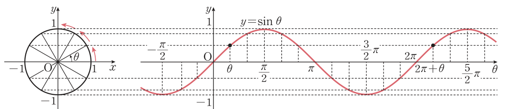
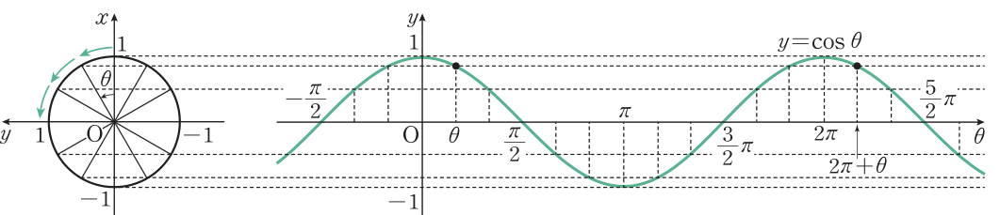
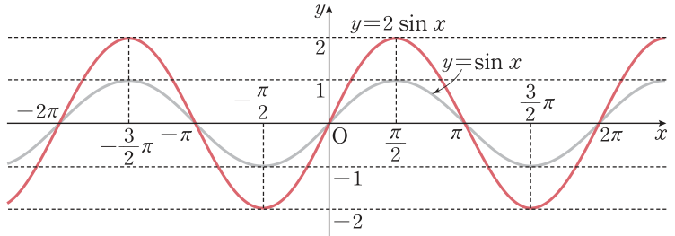
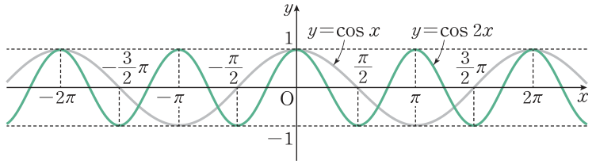
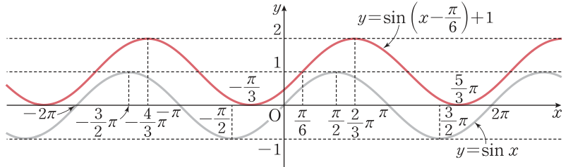
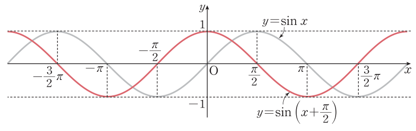

2026학년도 1학기 | 대수
놀이공원의 대관람차가 일정한 속도로 회전하면 곤돌라의 위치는 시시각각 변한다. 한 곤돌라의 위치를 차례로 A, B, C, …, L 로 나타내고, 각 위치에서의 높이를 생각해 보자.
[개방형 발문] ① 각 위치에서 곤돌라의 높이를 가로축(위치)·세로축(높이)의 점으로 찍으면 어떤 모양이 될까? ② 그 점들을 매끄러운 곡선으로 이으면 어떤 특징(가장 높은 곳, 가장 낮은 곳, 되풀이되는 간격)이 보일까?
[연결] 곤돌라의 높이는 관람차(원) 위 점의 \(y\)좌표다. 동경과 단위원의 교점 \(\mathrm{P}(x,y)\)에 대하여 \(\sin\theta=y\), \(\cos\theta=x\) 이므로, 점 P가 단위원을 돌 때 \(\sin\theta\)·\(\cos\theta\)의 변화가 곧 물결 모양의 곡선이 된다. 오늘은 ① 사인·코사인함수의 그래프, ② 주기와 최댓값·최솟값, ③ \(y=a\sin bx\) 와 평행이동, ④ \(\pi\pm x\), \(\dfrac{\pi}{2}\pm x\) 의 삼각함수 성질을 손에 넣는다.
각 \(\theta\)를 나타내는 동경과 단위원의 교점을 \(\mathrm{P}(x,y)\)라 하면 \(\sin\theta=y\), \(\cos\theta=x\). 따라서 \(\theta\)를 가로축, \(\sin\theta\)(또는 \(\cos\theta\))를 세로축에 나타내면 다음 그래프를 얻는다. (정의역의 원소는 보통 \(x\)로 나타내므로 \(y=\sin x\), \(y=\cos x\) 로 쓴다.)


생각 톡톡: 두 함수 모두 최댓값은 \(1\), 최솟값은 \(-1\). \(y=\cos x\) 의 그래프는 \(y=\sin x\) 의 그래프와 모양이 같고 옆으로 밀려 있을 뿐이다 (개념 5에서 확인).
함수 \(f(x)\)의 정의역에 속하는 모든 실수 \(x\)에 대하여 \(f(x+p)=f(x)\) 를 만족시키는 \(0\)이 아닌 상수 \(p\)가 존재할 때 \(f(x)\)를 주기함수라 하고, 이러한 \(p\) 중 최소인 양수를 그 함수의 주기라 한다.
\(\sin(x+2n\pi)=\sin x,\quad \cos(x+2n\pi)=\cos x\) (단, \(n\)은 정수) → 주기 \(2\pi\)
🎯 보기 — 성질로 값 구하기
\(\sin\left(-\dfrac{\pi}{4}\right)=-\sin\dfrac{\pi}{4}=\) \(-\dfrac{\sqrt2}{2}\), \(\cos\left(-\dfrac{\pi}{3}\right)=\cos\dfrac{\pi}{3}=\) \(\dfrac12\)
\(\sin\dfrac{13}{6}\pi=\sin\left(2\pi+\dfrac{\pi}{6}\right)=\) \(\dfrac12\), \(\cos\dfrac74\pi=\cos\left(2\pi-\dfrac{\pi}{4}\right)=\cos\left(-\dfrac{\pi}{4}\right)=\) \(\dfrac{\sqrt2}{2}\)


예제 1 \(y=2\sin x\): \(-2\le 2\sin x\le 2\) 이므로 치역 \(\{y\mid -2\le y\le 2\}\), \(2\sin x=2\sin(x+2\pi)\) 이므로 주기 \(2\pi\)
예제 2 \(y=\cos 2x\): 치역 \(\{y\mid -1\le y\le 1\}\), \(\cos 2x=\cos(2x+2\pi)=\cos 2(x+\pi)\) 이므로 주기 \(\pi\)
\(y=a\sin bx,\ y=a\cos bx\): 최댓값 \(|a|\), 최솟값 \(-|a|\), 주기 \(\dfrac{2\pi}{|b|}\)
주의: \(b\)가 커질수록 주기는 짧아진다 (\(2\pi\times b\) 가 아니라 \(2\pi\div|b|\)).
함수 \(y=f(x-a)+b\) 의 그래프는 \(y=f(x)\) 의 그래프를 \(x\)축의 방향으로 \(a\)만큼, \(y\)축의 방향으로 \(b\)만큼 평행이동한 것이다.

예제 3 \(y=\sin\left(x-\dfrac{\pi}{6}\right)+1\): \(-1\le\sin\left(x-\dfrac{\pi}{6}\right)\le 1\) 에서 \(0\le \sin\left(x-\dfrac{\pi}{6}\right)+1\le 2\) 이므로 치역 \(\{y\mid 0\le y\le 2\}\).
\(y=\sin x\) 의 그래프를 \(x\)축의 방향으로 \(\dfrac{\pi}{6}\)만큼, \(y\)축의 방향으로 \(1\)만큼 평행이동 → 주기 \(2\pi\)
주의: \(x-\dfrac{\pi}{6}\) 은 오른쪽으로 \(\dfrac{\pi}{6}\) 이동. \(+b\) 는 최댓값·최솟값을 모두 \(b\)만큼 올린다.
\(y=\sin x\), \(y=\cos x\) 의 그래프를 \(x\)축의 방향으로 \(-\pi\), \(-\dfrac{\pi}{2}\) 만큼 평행이동해 보면 다음이 성립한다. (아래는 \(-\dfrac{\pi}{2}\)만큼 옮긴 \(y=\sin\left(x+\dfrac{\pi}{2}\right)\) — \(y=\cos x\) 와 겹친다.)

유도: ②는 ①에 \(x\) 대신 \(-x\)를 대입: \(\sin(\pi-x)=-\sin(-x)=\sin x\). ④도 ③에서 같은 방법. 외우기보다 그래프를 옮겨 보고 확인하는 습관을 들이자.
그래프의 성질로 값을 구하고, 치역·주기를 읽는 단계
평행이동과 \(\pi\pm x\), \(\dfrac{\pi}{2}\pm x\) 성질을 쓰는 단계
"틀려야 는다!" 최댓값·최솟값·주기에서 거꾸로 계수 찾기
주기가 \(\pi\)라고 \(b=\dfrac12\)로 쓰는 학생이 많다. 주기는 \(\dfrac{2\pi}{b}\) — \(b\)로 나눈다.
STEP 1 — 최댓값·최솟값: \(a\gt 0\)이므로 최댓값 \(a+c=5\), 최솟값 \(-a+c=1\).
STEP 2 — 연립: 두 식을 더하면 \(2c=6\), \(c=3\); 빼면 \(2a=4\), \(a=2\).
STEP 3 — 주기: \(\dfrac{2\pi}{b}=\pi\) 이므로 \(b=2\).
결론: \(a=2,\ b=2,\ c=3\) → \(y=2\sin 2x+3\).
핵심: \(c\) = (최댓값 + 최솟값) ÷ 2 (가운데 선), \(a\) = (최댓값 − 최솟값) ÷ 2 (진폭).
📖 출처: 자체 출제 · 최대·최소·주기로 함숫값 구하기 (유형)
난이도 ★★★ (7분) · 핵심: 진폭·가운데 선·주기 \(\dfrac{2\pi}{b}\) 세 가지를 거꾸로 읽기
핵심: \(x=\dfrac{\pi}{3}\)은 주기 \(\dfrac43\pi\)의 \(\dfrac14\) 지점 — 사인 곡선이 처음 최댓값에 닿는 곳이므로 계산 없이도 \(4\)임을 확인할 수 있다.
📖 출처: 자체 출제 · \(\dfrac{\pi}{2}-x\) 성질로 코사인 제곱의 합 (유형)
난이도 ★★★ (7분) · 핵심: \(\cos(90^\circ-x)=\sin x\) 로 짝짓기 + \(\sin^2x+\cos^2x=1\)
핵심: 16차시의 \(\sin^2x+\cos^2x=1\) 과 오늘의 \(\dfrac{\pi}{2}-x\) 성질의 결합. 항이 \(89\)개(홀수)이므로 짝이 없는 가운데 항을 꼭 따로 더한다.
스마트폰으로 우측 QR코드를 스캔하여, 아래 3가지 유형 중 하나 이상을 체크하고 통합 서술형으로 작성해 제출한다.